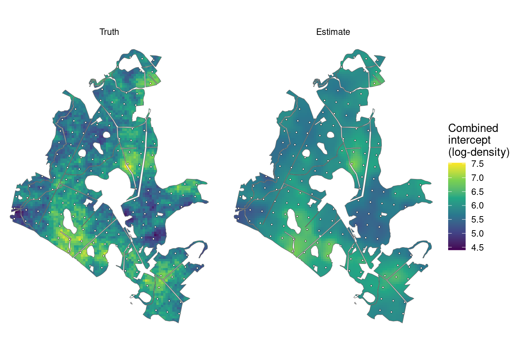
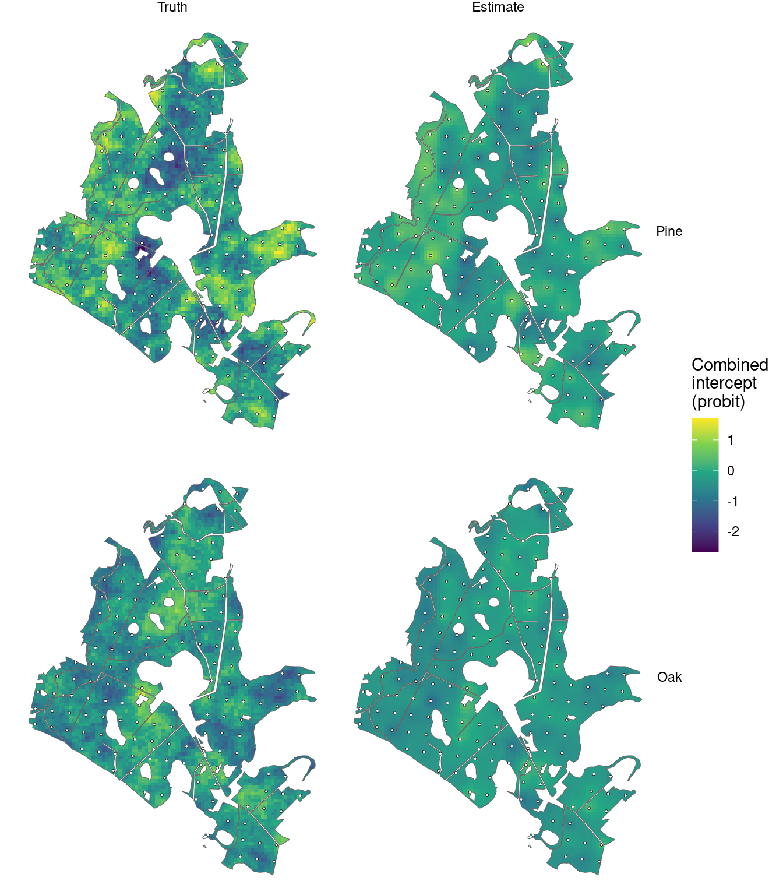
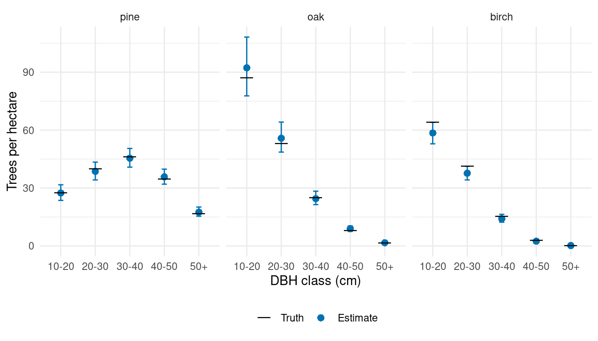
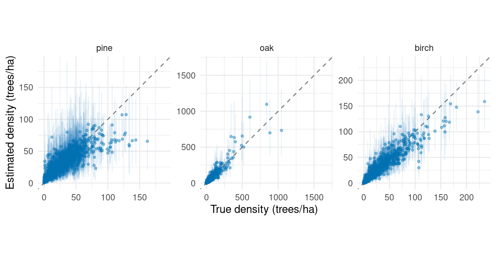

library(magComp)
library(tidyverse)
library(sf)
plots <- read_csv("data/plots.csv")
prediction <- read_csv("data/prediction.csv")
true_parameters <- read_csv("data/true_parameters.csv", na = "NA")
forest <- st_read("data/forest.gpkg", quiet = TRUE)
prediction_cells <- st_read("data/prediction_cells.gpkg", quiet = TRUE)
plot_locations <- st_read("data/plot_locations.gpkg", quiet = TRUE)
cell_stand_areas <- read_csv("data/cell_stand_areas.csv")
species_order <- c("pine", "oak", "birch")
dbh_classes <- c("10-20", "20-30", "30-40", "40-50", "50+")Spatial effects on tree density and species composition
Source:vignettes/articles/spatial-effects-plot-sampling.qmd
Nearby plots may have similar tree densities and species composition even after accounting for canopy height. Soil, moisture, and management history can vary across a forest without following stand boundaries. We extend the full plot-sampling model with spatial effects that share information according to distance. Unlike the stratum example, these effects vary continuously across the forest rather than being shared within predefined groups.
We use a population with known spatial effects to examine parameter estimation, map true and estimated relationships, and compare forest and stand species-by-DBH densities with truth. The population uses the same forest, 151 plot locations, canopy heights, and 4,812 prediction cells as the data article, with new simulated counts.
Example data
Download the spatial-example data (ZIP)
Extract it and use the folder containing data/ as your R working directory. The archive includes the generated population, its true parameters and spatial effects, and generate_population.R to reproduce it with seed 1. The code below reads the supplied population; generating it again is optional.
Read the generated population
We read the plots, prediction cells, and generating parameters, along with polygons for mapping and areas for stand summaries. Coordinates ending in _km are in kilometers; the original coordinates and polygons are in meters. The predictor x is canopy height standardized using the plots’ mean and standard deviation, as in the preceding articles.
The CSV files include simulated counts for all 15 species-by-DBH categories. Their v and w columns hold the true spatial effects, and three additional columns hold the true combined intercepts. These provide comparisons after fitting. We select only counts, areas, covariates, and coordinates when constructing the model data below.
Understand the generating model
Spatial magnitude and species allocation
At location , expected tree density and the count on a plot of area hectares follow
The zero-mean Gaussian process has covariance
The spatial variance determines variation on the log-density scale. The decay controls how quickly correlation decreases with distance; larger values describe shorter spatial dependence. We use , , , and , with negative-binomial size . At average canopy height and a zero spatial effect, expected density is 350 trees/ha.
Species allocation proceeds through pine, then oak, with birch receiving the remaining trees. At allocation step , the conditional probability is
where is the standard Normal distribution function. The spatial factor is independent of , has mean zero and unit variance, and has covariance . Pine and oak share this field, with loadings and . A positive factor score increases pine’s allocation probability and decreases oak’s probability among the remaining trees. Pine is the anchor, so its loading is constrained to be positive. The loadings determine the scale of the species effects because the factor variance is fixed at one.
We use . With distances in kilometers, the magnitude and composition correlations fall to approximately 0.05 at 1 km and 0.6 km, respectively; these effective spatial ranges are approximately . The species intercepts and canopy-height slopes, and all conditional DBH regressions, match the earlier articles. No spatial effects or smoothing are added to the DBH allocation models.
Generate effects and counts together
We generate each spatial field jointly over the observed plots and prediction cells. This connects both sets of locations to the same realized forest. Each field is a full GP draw obtained from its covariance matrix using a Cholesky factor. Given those fields, we draw total plot counts and allocate them to species and then DBH classes.
The supplied files contain this completed population. The optional code below shows the construction; the downloadable script includes the conditional DBH allocation and writes the resulting files. Running source("generate_population.R") reproduces the supplied population. Full-GP generation requires substantially more memory than reading these files.
Optional code to generate the spatial population
We combine the locations and specify the generating parameters.
library(tidyverse)
plots <- read_csv("data/plots.csv") |>
select(plot_id, stand_id, easting, northing, area, p95, x)
prediction <- read_csv("data/prediction.csv") |>
select(plot_id, stand_id, easting, northing, area, p95, x)
locations <- bind_rows(
plots |> mutate(dataset = "plot"),
prediction |> mutate(dataset = "prediction")
) |>
mutate(easting_km = easting / 1000, northing_km = northing / 1000)The two independent Gaussian draws include every location. Multiplying independent standard Normal draws by the transposed Cholesky factor gives the specified spatial covariance.
# Both fields include every observed and prediction location in one draw.
coordinates <- as.matrix(select(locations, easting_km, northing_km))
distance <- as.matrix(dist(coordinates))
set.seed(1)
locations$v <- drop(t(chol(sigma_v^2 * exp(-phi_v * distance))) %*%
rnorm(nrow(locations)))
locations$w <- drop(t(chol(exp(-phi_w * distance))) %*%
rnorm(nrow(locations)))
rm(distance)We then generate counts and species allocations, using each location’s spatial effects and area. The complete script finishes by allocating species counts among DBH classes and saving the population.
locations <- locations |>
mutate(
magnitude_intercept = beta_0 + v,
pine_intercept = alpha_pine[1] + lambda_pine * w,
oak_intercept = alpha_oak[1] + lambda_oak * w,
expected_density = exp(magnitude_intercept + beta_1 * x),
count = rnbinom(n(), mu = area * expected_density, size = size)
)
species <- c("pine", "oak", "birch")
pi_pine <- pnorm(locations$pine_intercept + alpha_pine[2] * locations$x)
pi_oak <- pnorm(locations$oak_intercept + alpha_oak[2] * locations$x)
species_counts <- tibble(
pine = rbinom(nrow(locations), locations$count, pi_pine)
)
species_counts$oak <- rbinom(
nrow(locations), locations$count - species_counts$pine, pi_oak
)
species_counts$birch <- locations$count - rowSums(species_counts)Fit with nearest-neighbor Gaussian processes
We fit nearest-neighbor Gaussian processes (NNGPs), which approximate the full GP through conditional distributions involving a small set of nearby locations (Datta et al. 2016). This avoids factoring a covariance matrix for all prediction cells. We use 15 neighbors for both spatial terms.
We first arrange counts into one row per plot, species, and DBH class.
trees <- plots |>
select(plot_id, area, x, easting_km, northing_km, contains(":")) |>
pivot_longer(contains(":"), names_to = c("species", "dbh_class"),
names_sep = ":", values_to = "count") |>
mutate(
species = factor(species, levels = species_order),
dbh_class = ordered(dbh_class, levels = dbh_classes)
) |>
arrange(plot_id, species, dbh_class)
dat <- magCompData(
trees,
unit = plot_id, categories = c(species, dbh_class),
tree_count = count, design = fixedArea(area)
)nngp() adds the magnitude spatial effect. factor_nngp() adds one spatial species factor, with anchors = "pine" identifying its positive loading. Both spatial decays, the magnitude variance, and the species loadings are estimated using automatic starting values and default priors.
fit <- magComp(
dat,
magnitude = ~ x + nngp(easting_km, northing_km, m = 15, name = "space"),
composition = magCompComposition(
species ~ x + factor_nngp(easting_km, northing_km, K = 1, m = 15,
anchors = "pine", name = "space"),
dbh_class | species ~ x
),
control = magCompControl(
n_samples = 6000,
n_burn = 2000,
n_chains = 3,
n_cores = 3,
chain_seeds = 1:3,
nb_size = 1000,
verbose = FALSE
)
)Each chain contributes 4,000 retained draws after discarding 2,000 burn-in iterations. The chains run on separate cores where supported. Negative-binomial size is fixed at its generating value, as in the stratum example; magComp does not estimate size alongside magnitude random effects.
Compare parameters and check the chains
We add the generating values to the parameter summary. This table focuses on the magnitude and species models; summary(fit) also includes the DBH regression coefficients. The variance, decay, and loading rows describe the spatial covariance structure.
parameter_summary <- summary(fit)
main_parameters <- parameter_summary |>
filter(component == "magnitude" | block == "species") |>
left_join(true_parameters, by = c("component", "block", "parameter", "index"))
main_parameters |>
select(symbol, truth, mean, q2_5, q97_5, rhat, ess) |>
knitr::kable(digits = 3,
col.names = c("Parameter", "Truth", "Mean", "2.5%", "97.5%", "R-hat", "ESS"))| Parameter | Truth | Mean | 2.5% | 97.5% | R-hat | ESS |
|---|---|---|---|---|---|---|
| beta[0] | 5.858 | 5.848 | 5.566 | 6.089 | 1.066 | 27.002 |
| beta[x] | -0.200 | -0.223 | -0.280 | -0.167 | 1.014 | 341.303 |
| sigma_v^2 | 0.250 | 0.261 | 0.149 | 0.549 | 1.002 | 266.337 |
| phi_v | 3.000 | 2.305 | 0.825 | 4.216 | 1.007 | 211.848 |
| alpha[0,pine] | 0.000 | -0.158 | -0.305 | 0.062 | 1.002 | 82.146 |
| alpha[x,pine] | 0.500 | 0.560 | 0.449 | 0.676 | 1.005 | 168.778 |
| alpha[0,oak] | -0.500 | -0.345 | -0.494 | -0.238 | 1.002 | 105.403 |
| alpha[x,oak] | -0.500 | -0.579 | -0.667 | -0.494 | 1.004 | 234.333 |
| lambda[pine,pine] | 0.700 | 0.678 | 0.586 | 0.788 | 1.004 | 291.425 |
| lambda[oak,pine] | -0.500 | -0.444 | -0.527 | -0.371 | 1.004 | 387.662 |
| phi_w[pine] | 5.000 | 9.327 | 4.678 | 22.081 | 1.003 | 664.082 |
The intervals for the magnitude variance, both spatial decays, and the species loadings include their generating values. The composition decay has a broad interval, indicating uncertainty about its spatial range. A single realized forest and its sampled plots need not identify the covariance parameters precisely.
The magnitude intercept has an R-hat of about 1.07 and an ESS of 27; the other parameters in this table have R-hats below 1.05. An intercept and its spatial effect can trade off: increasing and lowering can leave almost unchanged. We therefore also inspect combined intercepts, as in the stratum article. For species, these are .
We use all retained draws to assess the combined intercepts averaged over the observed plot locations.
diagnostics <- samples(fit, type = "combined", group = ".all")
summary(diagnostics) |>
transmute(quantity = if_else(component == "magnitude", "Magnitude",
paste(str_to_title(stick), "allocation")),
rhat, ess) |>
knitr::kable(digits = 3,
col.names = c("Quantity", "R-hat", "ESS"))| Quantity | R-hat | ESS |
|---|---|---|
| Magnitude | 1 | 1609.531 |
| Pine allocation | 1 | 3283.711 |
| Oak allocation | 1 | 2006.524 |
These combined intercepts have R-hats near one and much larger effective sample sizes. Their improved diagnostics describe the sums, without changing the separate intercept’s diagnostic. plot(diagnostics) can be used to inspect their chains.
Predict jointly across the forest
For each retained parameter draw, predict() generates spatial effects at new locations conditional on observed effects and previously generated prediction effects. We supply the complete prediction grid in one call so forest and stand summaries retain this joint spatial variation.
The observation target then generates total counts and species-by-DBH allocations. We retain 100 draws per chain for prediction and divide counts by their cell areas through type = "density". Setting keep_effects = TRUE also keeps the latent draws used in these same predictions for mapping.
Map true and estimated combined intercepts
We extract the combined intercepts at prediction locations and join them to the true values. samples() uses the stored draws; it does not simulate a second set of spatial effects. The magnitude combined intercept is log density at average canopy height. Species combined intercepts are on the probit scale at that same canopy height.
intercept_summary <- summary(samples(predictions, type = "combined")) |>
mutate(plot_id = as.integer(unit),
component = if_else(component == "magnitude", "Magnitude",
str_to_title(stick)))
true_intercepts <- prediction |>
select(plot_id, magnitude_intercept, pine_intercept, oak_intercept) |>
pivot_longer(-plot_id, names_to = "component", values_to = "truth") |>
mutate(component = recode(component, magnitude_intercept = "Magnitude",
pine_intercept = "Pine", oak_intercept = "Oak"))
map_values <- intercept_summary |>
select(plot_id, component, Estimate = mean) |>
left_join(true_intercepts, by = c("plot_id", "component")) |>
rename(Truth = truth) |>
pivot_longer(c(Truth, Estimate), names_to = "source", values_to = "intercept") |>
mutate(component = factor(component, levels = c("Magnitude", "Pine", "Oak")),
source = factor(source, levels = c("Truth", "Estimate")))
intercept_maps <- prediction_cells |>
left_join(map_values, by = "plot_id",
relationship = "many-to-many")Truth and posterior means share a color scale within each figure. White circles mark the sampled plots. These maps compare combined intercepts; variation due to canopy height enters separately when calculating densities and allocation probabilities.
ggplot(filter(intercept_maps, component == "Magnitude")) +
geom_sf(aes(fill = intercept), color = NA) +
geom_sf(data = forest, fill = NA, color = "grey40", linewidth = 0.2) +
geom_sf(data = plot_locations, shape = 21, fill = "white", size = 0.7,
stroke = 0.2) +
facet_wrap(~ source, nrow = 1) +
scale_fill_viridis_c(name = "Combined\nintercept\n(log-density)") +
coord_sf(datum = NA) +
theme_void()
ggplot(filter(intercept_maps, component %in% c("Pine", "Oak"))) +
geom_sf(aes(fill = intercept), color = NA) +
geom_sf(data = forest, fill = NA, color = "grey40", linewidth = 0.2) +
geom_sf(data = plot_locations, shape = 21, fill = "white", size = 0.7,
stroke = 0.2) +
facet_grid(component ~ source) +
scale_fill_viridis_c(name = "Combined\nintercept\n(probit)") +
coord_sf(datum = NA) +
theme_void()
The estimates show the broad spatial patterns, with less local variation than truth between sampled plots. The maps show posterior means; prediction and area summaries also retain uncertainty about the spatial effects.
Compare forest densities with truth
We pass the predictive density draws to standSummary(), using cell areas as weights. The returned samples contain one forest density for each species-by-DBH category in every draw. Their means and 95% posterior predictive intervals can be compared with the realized simulated counts per unit area.
forest_predictions <- standSummary(
predictions,
data = prediction,
unit = plot_id,
represented_area = area,
summary = "samples"
)
forest_summary <- summary(forest_predictions)
forest_truth <- prediction |>
select(contains(":")) |>
pivot_longer(everything(), names_to = "category", values_to = "count") |>
group_by(category) |>
summarise(truth = sum(count) / sum(prediction$area), .groups = "drop")
forest_comparison <- forest_summary |>
as_tibble() |>
left_join(forest_truth, by = "category") |>
separate_wider_delim(category, delim = ":", names = c("species", "dbh_class")) |>
mutate(species = factor(species, levels = species_order),
dbh_class = ordered(dbh_class, levels = dbh_classes))
ggplot(forest_comparison, aes(dbh_class, mean)) +
geom_errorbar(aes(ymin = q2_5, ymax = q97_5), width = 0.15,
color = "#0072B2") +
geom_point(aes(shape = "Estimate"), color = "#0072B2", size = 2.5) +
geom_point(aes(y = truth, shape = "Truth"), size = 6) +
scale_shape_manual(values = c("Truth" = 95, "Estimate" = 16),
breaks = c("Truth", "Estimate"), name = NULL) +
facet_wrap(~ species, nrow = 1) +
scale_y_continuous(limits = c(0, NA)) +
labs(x = "DBH class (cm)", y = "Trees per hectare") +
theme_minimal() +
theme(legend.position = "bottom")
The forest summaries combine spatially varying magnitude and species allocation with canopy height and conditional DBH allocation. Their uncertainty includes parameter uncertainty, jointly predicted spatial effects, and count variation.
Compare stand densities with truth
The prepared area table identifies each cell’s area within each stand. A cell that crosses stand boundaries contributes the same density draw to each stand, weighted by its overlap area. We use that table for both the predictions and simulated truth, following the data article.
stand_predictions <- standSummary(
predictions,
data = cell_stand_areas,
unit = prediction_id,
group = stand_id,
represented_area = area_ha,
summary = "samples"
)
stand_truth <- prediction |>
select(plot_id, area, contains(":")) |>
pivot_longer(contains(":"), names_to = "category", values_to = "count") |>
inner_join(cell_stand_areas, by = c("plot_id" = "prediction_id"),
relationship = "many-to-many") |>
group_by(stand_id, category) |>
summarise(truth = weighted.mean(count / area, area_ha), .groups = "drop")
stand_comparison <- summary(stand_predictions) |>
as_tibble() |>
rename(stand_id = unit) |>
left_join(stand_truth, by = c("stand_id", "category")) |>
separate_wider_delim(category, delim = ":", names = c("species", "dbh_class")) |>
mutate(species = factor(species, levels = species_order))Each point below represents one species-by-DBH density in one of the 249 stands. The axes have matching limits within each species panel.
stand_limits <- stand_comparison |>
group_by(species) |>
summarise(limit = max(truth, mean, q97_5), .groups = "drop")
ggplot(stand_comparison, aes(truth, mean)) +
geom_blank(data = stand_limits, aes(x = limit, y = limit)) +
geom_abline(intercept = 0, slope = 1, linetype = "dashed", color = "grey50") +
geom_errorbar(aes(ymin = q2_5, ymax = q97_5), width = 0,
color = "#0072B2", alpha = 0.08) +
geom_point(color = "#0072B2", size = 0.9, alpha = 0.4) +
facet_wrap(~ species, nrow = 1, scales = "free") +
scale_x_continuous(limits = c(0, NA)) +
scale_y_continuous(limits = c(0, NA)) +
labs(x = "True density (trees/ha)", y = "Estimated density (trees/ha)") +
theme_minimal() +
theme(aspect.ratio = 1)
Spatial effects allow information from nearby sampled plots to inform predictions within each stand. Stand boundaries determine the areas over which we summarize predictions; they do not constrain the spatial processes. The same joint prediction draws support both forest and stand summaries.
The conditional DBH-effects article adds a spatial factor to size allocation within species. It explains how a shared factor can affect different species and DBH allocation steps through their own loadings, and briefly shows a stratum alternative.
For repeated inventories, the space-time article extends the magnitude and species effects to describe dependence across both locations and measurement years.
References
Datta, Abhirup, Sudipto Banerjee, Andrew O. Finley, and Alan E. Gelfand. 2016. “Hierarchical Nearest-Neighbor Gaussian Process Models for Large Geostatistical Datasets.” Journal of the American Statistical Association 111 (514): 800–812. https://doi.org/10.1080/01621459.2015.1044091.